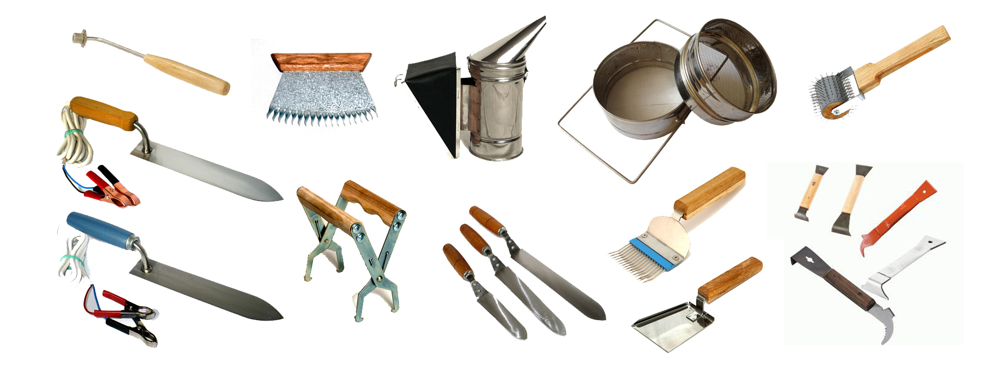
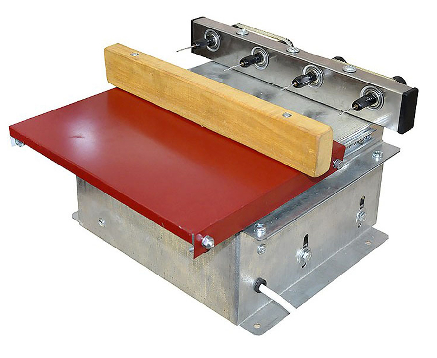
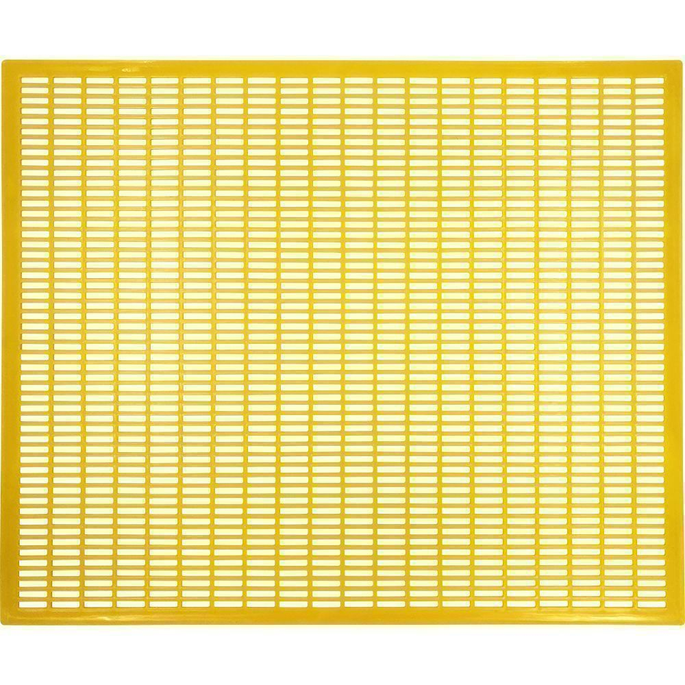
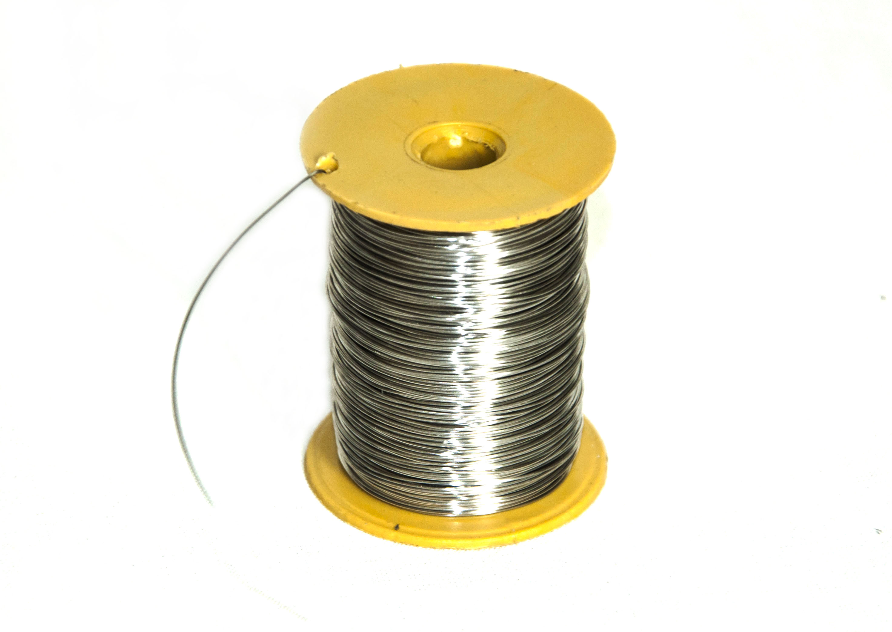
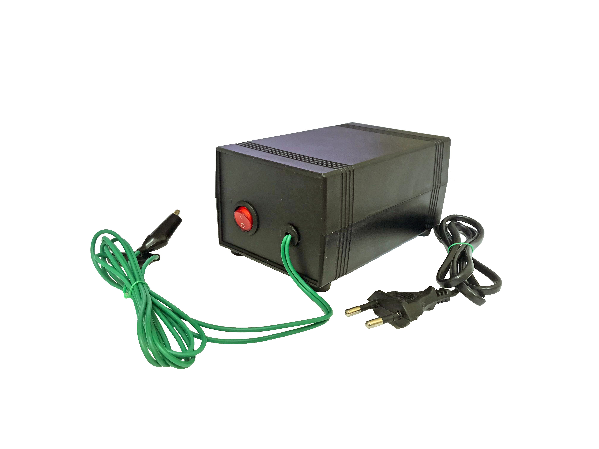

Инвентарь и оборудование для пчеловодства
Пчеловодство - замечательное занятие, которое может стать как хобби, приносящим выгоду, так и бизнесом. Не имеет значения причина, по которой вы решили заняться пчеловодством. В любом случае вам понадобятся инструменты и оборудование, минимальный набор которых облегчит уход за пчелами, увеличит его эффективность, обеспечит вам успешность и продуктивность.
Базовый инвентарь
Оборудование для работы с ульями и рамками
Пчеловоды расходятся во мнении, какие именно инструменты нужны для того, чтоб заниматься пчеловодством. Но вам, однозначно, понадобится улей. Даже, если вы решите купить улей, а не сделать его своими руками, для поддержания домика для пчел в исправном состоянии (ремонта или замены износившихся частей) понадобятся базовые инструменты и оборудование. Среди них есть универсальные, такие как стамески, которые служат рычагом для вскрытия улья или извлечения рамок, гвоздодером и скребком. Есть и более специфичные, например, предназначенные для внутреннего обустройства ульев:
-  пасечные сверлильные станки
-  разделительные решетки
-  проволока
-  наващиватели
Инвентарь для работы с пчелами
Занятие пчеловодством невозможно без пчел. Для работы с ними вам понадобится инвентарь и оборудование из разряда “must have”, такие, как щетки. Они просто незаменимы, поскольку используется для деликатного удаления пчел при инспектировании состояния ульев и во время сбора меда. И это то, без чего в самом деле не обойтись, если вы хотите не повредить соты или крылья пчел. Или, к примеру, кормушки и поилки, которые позволяют подкормить пчел в любую погоду и в любое время года, что может спасти ваших питомцев от гибели.
Инвентарь для извлечения меда
Главная цель пчеловодства - получение меда и прочих продуктов. Поэтому вам никак не обойтись без инвентаря для извлечения меда. И тут, собственно, нет оборудования, которое будет лишним. Чтоб извлечь рамку нужны захваты. Чтоб временно дезактивировать пчел не обойтись без дымаря, ибо дым создает буфер для сигнальной системы пчел, снижая их коммуникативные способности. Без пасечных ножей и вилок не снять забрус с сот, а без фильтров не получить чистый, без восковых примесей мед.
Дополнительный инвентарь
Дополнительные продукты пчеловодства являются неистощимым источником полезных веществ, а если для вас пчеловодство - бизнес, то и дохода. Поэтому для получения воска, перги, пыльцы созданы специальные инструменты: воскотопки, пыльцеуловители, которые помогут вам справиться с задачей по их сбору.
Многие из вышеописанных инструментов являются дополнительными в работе пчеловода. Без некоторых из них эффективно содержать пчел и получать достаточное количество продуктов пчеловодства просто невозможно. Пчеловодство может оказаться не таким дешевым занятием, как вы предполагали. Но приобретая инструменты и оборудование, необходимые для содержания пчел и получения продуктов пчеловодства, вы делаете долгосрочную инвестицию, которая окупится в самом ближайшем времени.